Đại học CMC · INFO3020 – Nhập môn Khoa học Dữ liệu
Báo cáo cuối kỳ (Issue #16) · cấu trúc SCQA · CRISP-DM
docs/final_report_traceability.md);
bản dựng tự động từ chối xuất báo cáo nếu một số liệu dẫn nguồn không còn khớp tệp gốc. Hệ số hồi quy chỉ là liên hệ quan sát (ceteris paribus), không phải hiệu ứng nhân quả.
Kiểm định giả thuyết xác nhận (baseline VN001) được tách bạch với kết quả thăm dò (mùa, mở rộng đa năm).PM2,5 là chỉ tiêu bụi mịn gắn với rủi ro hô hấp–tim mạch; Quy chuẩn QCVN 05:2023/BTNMT quy định ngưỡng trung bình 24 giờ 50 µg/m³ và trung bình năm 25 µg/m³. Đồ án phân tích chuỗi thời gian PM2,5 đô thị Hà Nội kết hợp tái phân tích khí tượng bề mặt Open-Meteo/ERA5 và xây dựng mô hình giải thích (hồi quy) cùng mô hình cảnh báo vượt ngưỡng (phân loại), theo CRISP-DM.
Bảng 1. Hai phạm vi dữ liệu được đóng băng và tách trạm (Protocol A) VN001 / VN003 · 1.0.0-m2-baseline / 2.0.0-issue44-extended
| Hạng mục | VN001 – baseline | VN003 – mở rộng lịch sử |
|---|---|---|
| Trạm | VN001_HANOI_556_NGUYEN_VAN_CU (556 Nguyễn Văn Cừ) | VN003_HANOI_OPENAQ_7441 (OpenAQ S3 Location 7441) |
| Phiên bản dữ liệu | 1.0.0-m2-baseline | 2.0.0-issue44-extended |
| Khoảng thời gian | 07/2025 – 07/2026 | 01/2022 – 04/2025 |
| Lưới giờ / giờ PM2,5 hợp lệ | 9.044 / 7.495 | 28.678 / 18.208 |
| Giờ thiếu (tỷ lệ) | 1.549 (17,13%) | 10.470 (36,51%) |
| Ngày đủ ≥ 18/24 giờ | 299 | 756 |
| SHA-256 (tệp dữ liệu) | 866f39de…2586efd | 6930557f…9a1f9b02 (snapshot lưu) |
Các phức tạp dưới đây đều được rút từ bằng chứng thực nghiệm của dự án, không phải giả định:
VN001 PM2,5 có trung vị 37,32, trung bình 43,76 µg/m³, độ lệch 1,295; trung bình–SD không đại diện cho mức phơi nhiễm điển hình.VN001) và 0,749 (VN003) ⇒ cỡ mẫu hiệu dụng chỉ neff ≈ 47,1 (trên 299 ngày) và 108,7 (trên 756 ngày); p-value giả định độc lập là phản bảo thủ.VN001, mùa hè 2026) và 2.568 giờ (VN003, 2022).Câu hỏi chính (RQ). Với dữ liệu quan trắc hiện có của Hà Nội, những đặc trưng thống kê, chu kỳ thời gian và liên hệ khí tượng nào của PM2,5 có thể được xác lập một cách trung thực (có xét tự tương quan, rò rỉ thời gian và khuyết thiếu), và chúng hỗ trợ đến đâu cho việc cảnh báo sớm vượt ngưỡng QCVN 24 giờ?
Bảng 2. Mô tả PM2,5 – hai trạm tách biệt (đơn vị µg/m³) VN001 / VN003 · 1.0.0-m2-baseline / 2.0.0-issue44-extended
| Trạm | Trung vị / Trung bình | SD / IQR | ρ₁ ngày / neff | Liên hệ tuyến tính khí tượng mạnh nhất |
|---|---|---|---|---|
VN001 | 37,32 / 43,76 | 27,89 / 30,73 | 0,728 / 47,1 | surface_pressure: r = 0,291 (n = 7.495) |
VN003 | 38,00 / 45,83 | 30,65 / 32,00 | 0,749 / 108,7 | surface_pressure: r = 0,298 (n = 18.208) |
Trên VN001, phân vị 95 và 99 của PM2,5 lần lượt là 101,87 và 133,79 µg/m³, cực đại 198,95; độ nhọn dư 1,913. Hai trạm có trung vị gần nhau nhưng là hai địa điểm vật lý khác nhau, nên không suy ra xu hướng 2022–2026 tại một điểm.
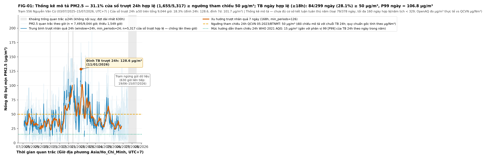
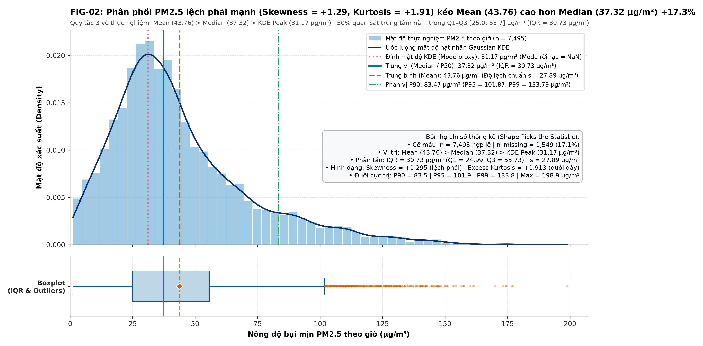
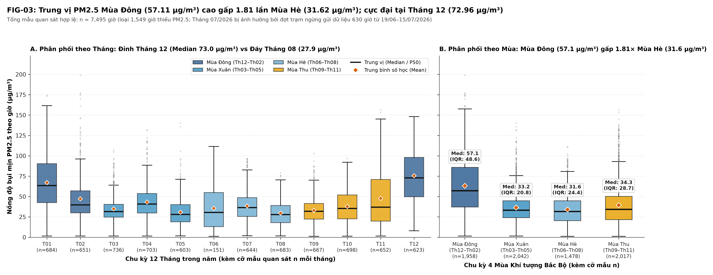
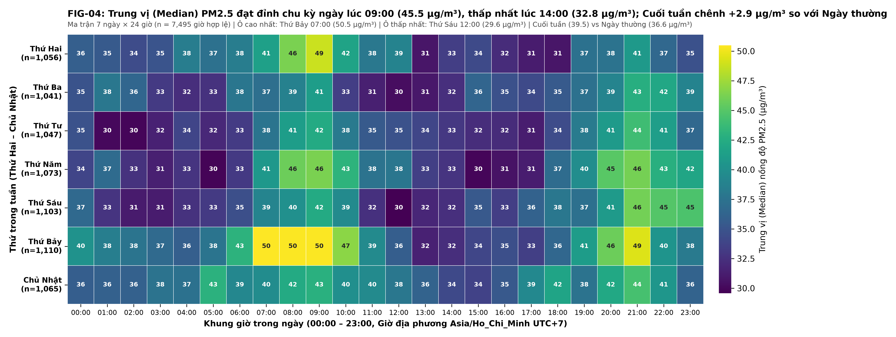
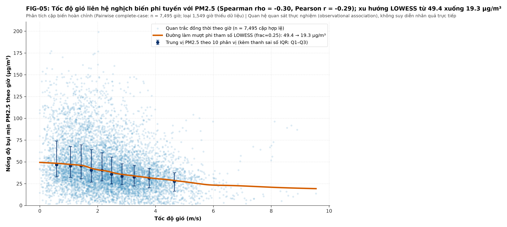
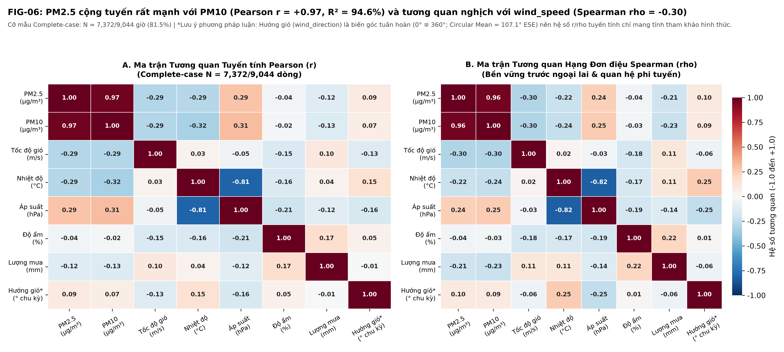
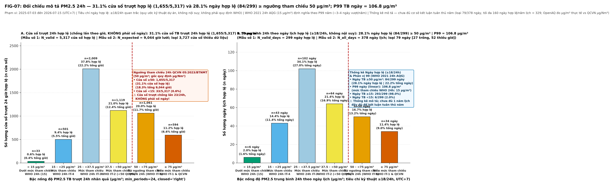
VN001 (1.0.0-m2-baseline); chúng không được gán nhãn là dữ liệu mở rộng. Các hình mở rộng bên dưới ghi rõ trạm và phiên bản 2.0.0-issue44-extended.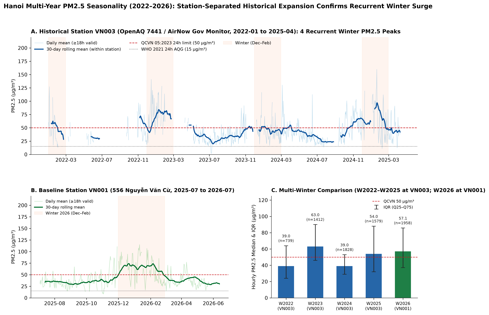
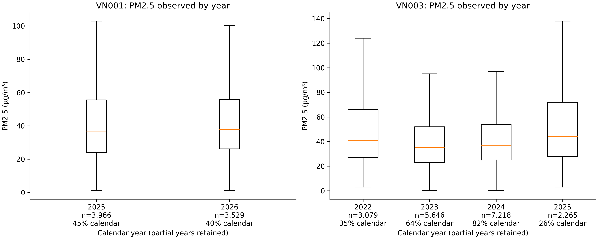
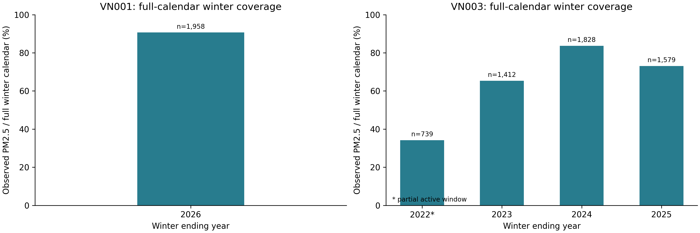
Đơn vị phân tích là trung bình ngày (≥ 18/24 giờ có dữ liệu; n = 299 ngày trên VN001). Mọi p-value xác nhận được dựng lại dưới H₀ có phụ thuộc: bootstrap khối trên lịch ngày (khối 28 ngày lịch, mặt nạ ngày thiếu đi theo bản sao, nhãn nhóm ở vị trí đích), 5.000 lần cho null và 1.000 lần cho CI, seed 42; họ Holm cố định 4 kiểm định, không thu hẹp sau khi xem kết quả. Monte Carlo đa kịch bản cho thấy kiểm định Wald HAC cho mùa có kích thước thực 30–55% thay vì 5% (kịch bản độc lập: 0,304), nên kiểm định mùa luôn được hạ xuống thăm dò theo quy tắc R5 (một chu kỳ mùa, mùa lẫn với xu hướng).
Bảng 3. Bốn kiểm định W9 – baseline (bộ bốn: thống kê, p hiệu chỉnh phụ thuộc → p Holm, effect size, CI 95% block-bootstrap) VN001 · 1.0.0-m2-baseline
| Kiểm định | Thống kê | p (hiệu chỉnh phụ thuộc) | p Holm | Effect size | CI 95% | Trạng thái |
|---|---|---|---|---|---|---|
| Khác biệt 4 mùa | H = 61,534 | 0,0280 | 0,0560 | ε² = 0,206 | —(omnibus; xem tương phản đông–hè ở báo cáo nguồn) | THĂM DÒ (R5) |
| Ngày làm việc vs cuối tuần | t (HAC) = 1,611 | 0,1082 | 0,1082 | |rrb| = 0,117 | Δ trung vị −2,74: [−11,13; 3,05] | Không bác bỏ H₀ (MDE ≈ 7,75) |
| Trung bình ngày vs 50 µg/m³ (24 giờ) | t (tỷ lệ, HAC) = −2,656 | 0,0083 | 0,0250 | r (cặp) = −0,410 | Tỷ lệ ngày > 50: 0,2809 [0,119; 0,443] | XÁC NHẬN |
| Trung bình giai đoạn vs 25 µg/m³ | t (HAC) = 4,354 | 1,84·10⁻⁵ | 7,38·10⁻⁵ | Cohen's d = 0,848 | Trung bình ngày 43,38 [35,1; 51,7] | XÁC NHẬN |
Bảng 4. Tái phân tích mở rộng W9 (Issue #50) – tách trạm, thăm dò theo mức bằng chứng đã định VN001 / VN003 · 2.0.0-issue44-extended
| Kiểm định | Ước lượng chính [CI 95%] – VN001 | Ước lượng chính [CI 95%] – VN003 | Holm p (VN001 / VN003) | Phân loại |
|---|---|---|---|---|
| Mùa (omnibus) | 61,53 (H) | 164,2 (H) | 0,05599 / 0,0003999 | THĂM DÒ / KHÔNG SO SÁNH ĐƯỢC |
| Ngày làm việc vs cuối tuần | 3,709 [−0,822; 8,24] | −0,256 [−3,86; 3,34] | 0,1082 / 0,889 | Hướng hiệu ứng khác nhau giữa hai trạm |
| QCVN 24 giờ (tỷ lệ ngày vượt) | 0,2809 [0,119; 0,443] | 0,3148 [0,222; 0,408] | 0,02501 / 0,0003162 | Cùng chiều; CI chồng lấn |
| QCVN trung bình năm | 43,38 [35,1; 51,7] | 45,8 [40,2; 51,4] | 7,375e-05 / 2,171e-12 | Cùng chiều; CI chồng lấn |
Số ngày có trung bình ngày > 50 µg/m³ là 84/299 (VN001) và 238/756 (VN003). “Cùng chiều” chỉ nghĩa là cả hai trạm bác bỏ H₀ sau Holm với cùng dấu, không có nghĩa hai trạm chia sẻ một hiệu ứng. Cỡ mẫu hiệu dụng của VN003 (108,7) vẫn nhỏ hơn nhiều so với 756 ngày danh nghĩa.
Mô hình giải thích dùng 9 biến (5 khí tượng và 4 hạng điều hòa chu kỳ), sai số chuẩn HAC Newey–West (24 giờ), kèm Ridge/Lasso, VIF và khoảng cách Cook. Loại pm10, pm25_was_missing, is_high_humidity_fog khỏi ma trận đặc trưng. Mọi hệ số mang nghĩa liên hệ quan sát trong miền giá trị huấn luyện, giữ nguyên các biến khác; không diễn giải nhân quả.
Bảng 5. Bốn giả định LINE – cả bốn đều bị vi phạm (kiểm định trên Train) VN001 / VN003 · 1.0.0-m2-baseline / 2.0.0-issue44-extended
| Giả định | Kiểm định | VN001 baseline (n = 4.279) | VN001 mở rộng (n = 6.749) | VN003 mở rộng (n = 13.835) | Kết luận |
|---|---|---|---|---|---|
| L – Tuyến tính | Ramsey RESET (p = 2) | F = 223,27 (p = 3,02e-49) | F = 615,42 (p = 4,40e-130) | F = 243,15 (p = 2,35e-54) | Vi phạm nghiêm trọng |
| I – Độc lập | Durbin–Watson, ACF(1) | DW = 0,2430; ACF(1) = 0,8785 | DW = 0,2079; ACF(1) = 0,8960 | DW = 0,3033; ACF(1) = 0,8484 | Vi phạm nặng |
| N – Chuẩn | Jarque–Bera | JB = 392,7 | JB = 1641,1 | JB = 51355,1 | Vi phạm |
| E – Phương sai đều | Breusch–Pagan LM | LM = 658,27 | LM = 513,49 | LM = 701,19 | Vi phạm |
surface_pressure = 8,061 (trung bình–cao, 5 ≤ VIF < 10), không vượt 10.precipitation ở baseline, p cổ điển 0,0060 trở thành 0,0808 khi dùng HAC-24 (mất ý nghĩa mức 5%).VN001 baseline; −7,2891 ở VN001 mở rộng; −6,2864 ở VN003), giữ nguyên các biến khác. Đây là liên hệ quan sát, không phải hiệu ứng nhân quả của gió.Bảng 6. Khái quát hóa theo thời gian của OLS (không trễ, tập Test theo trình tự thời gian) VN001 / VN003 · 1.0.0-m2-baseline / 2.0.0-issue44-extended
| Phạm vi | Hệ số wind_speed (HAC-24 SE) | Test R² | Test RMSE (µg/m³) | Ghi chú |
|---|---|---|---|---|
| VN001 baseline (cắt 2026-01-15) | −6,0673 (1,1173) | −1,954 | 41,4604 | R² âm: kém hơn dự báo bằng trung bình Train – ngoại suy mùa |
| VN001 mở rộng 80/20 | −7,2891 (0,7769) | −0,1073 | 21,1167 | Test rơi vào mùa hè–đợt mất dữ liệu |
| VN003 mở rộng 80/20 | −6,2864 (0,4482) | +0,1498 | 32,8238 | Giải thích được phần nhỏ phương sai |
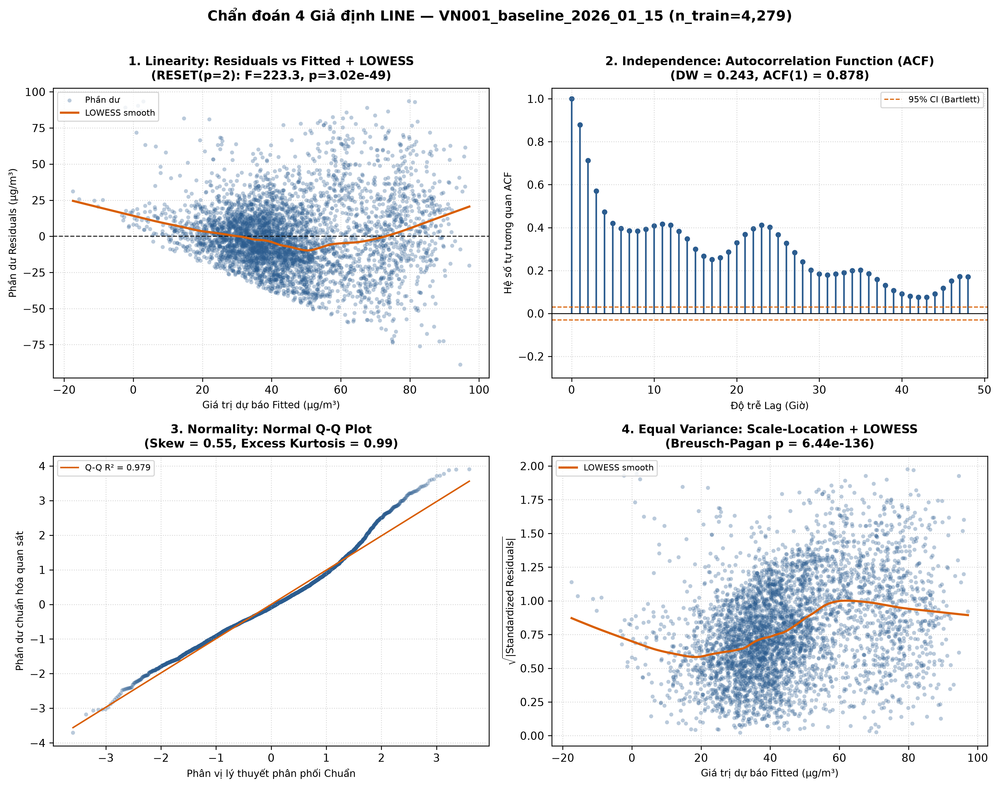
R² ngoài mẫu âm ở baseline cho thấy mô hình tuyến tính khí tượng không đủ để dự báo vận hành; hệ số chỉ có giá trị mô tả xu hướng liên hệ cục bộ. Thêm trung bình trượt 24 giờ cải thiện R² (0,3541 ở baseline; 0,4981 ở VN003) nhưng bản chất là thông tin tự hồi quy, không phải bằng chứng cho vai trò khí tượng.
Nhãn: trung bình trượt 24 giờ quan sát ≥ 50 µg/m³ (QCVN 24 giờ), không nội suy nhãn. Chia theo thời gian, tinh chỉnh ngưỡng xác suất theo F₂ trên Train (TimeSeriesSplit), pipeline chống rò rỉ, không dùng SMOTE (dùng trọng số lớp). Chỉ số trọng tâm là Recall và PR-AUC so với tỷ lệ dương (đường cơ sở), không dùng Accuracy đơn lẻ.
Bảng 7. Hiệu năng trên tập Test độc lập – baseline VN001 (2.302 giờ hợp lệ; 666 ca dương; tỷ lệ dương 28,93%) VN001 · 1.0.0-m2-baseline
| Mô hình | PR-AUC | Recall | Precision | F1 / F2 | Brier |
|---|---|---|---|---|---|
| Dummy (prior) | 0,2893 (= tỷ lệ dương) | 0,00% | — | — | — |
| Logistic Regression (τ* = 0,43) | 0,9989 | 99,55% (663/666) | 94,18% | — | 0,0143 |
| Random Forest (τ* = 0,32) | 0,9985 | 100,00% | 96,10% | 0,9801 / 0,9920 | 0,0134 |
Dummy đạt Accuracy 71,07% nhưng Recall 0% – minh chứng cho “bẫy Accuracy”. Ma trận nhầm lẫn của Random Forest [[TN, FP], [FN, TP]] = [[1609, 27], [0, 666]]. Hiệu chuẩn xác suất được đánh giá trên 2.302 mẫu (Brier ở bảng trên).
pm25_rolling_mean_24h và nhãn, cộng với việc ERA5 có độ trễ ~5 ngày: đây là nowcast hồi cứu, không phải hệ thống cảnh báo thời gian thực.Bảng 8. Suy giảm PR-AUC theo tầm dự báo h (Logistic Regression, đặc trưng đầy đủ, có purge gap) và các kịch bản ablation – baseline VN001 · 1.0.0-m2-baseline
| Kịch bản | n Test | Dương | PR-AUC | Recall |
|---|---|---|---|---|
| h = 0 – đầy đủ | 2.302 | 666 | 0,9989 | 0,9955 |
| h = 0 – bỏ trung bình trượt 24h (Lag24 + khí tượng) | 2.302 | 666 | 0,7908 | 0,8529 |
| h = 0 – chỉ khí tượng + thời gian (không PM2,5) | 2.323 | 669 | 0,4338 | 1,0 |
| h = 1 | 2.281 | 663 | 0,9966 | 0,9804 |
| h = 6 | 2.186 | 647 | 0,9696 | 0,8887 |
| h = 12 | 2.084 | 619 | 0,9094 | 0,7205 |
| h = 24 | 1.893 | 543 | 0,7513 | 0,6041 |
Bảng 9. Ba phạm vi phân loại (Protocol A) – kể cả phạm vi KHÔNG ƯỚC LƯỢNG ĐƯỢC VN001 / VN003 · 1.0.0-m2-baseline / 2.0.0-issue44-extended
| Phạm vi | Trạm / phiên bản | Test hợp lệ (tỷ lệ dương) | Dummy PR-AUC | LogReg PR-AUC / Recall | RF PR-AUC / Recall | Hiệu chuẩn |
|---|---|---|---|---|---|---|
| VN001_baseline_2026_01_15 | VN001 / 1.0.0-m2-baseline | 2.302 (28,93%) | 0,2893 | 0,9989 / 99,55% | 0,9985 / 100,00% | OK |
| VN001_extended_80_20 | VN001 / 2.0.0-issue44-extended | 242 (0,00%) | UNESTIMABLE | UNESTIMABLE | UNESTIMABLE | UNESTIMABLE |
| VN003_extended_2022_2025 | VN003 / 2.0.0-issue44-extended | 3.439 (49,81%) | 0,4981 | 0,9995 / 99,77% | 0,9983 / 99,30% | OK |
Kiểm toán rò rỉ bốn lớp (Target, nhiễm chéo Train–Test, Temporal, Group) có bằng chứng unit test, validate_no_leakage(), purge gap ở h > 0 và biên bản loại SMOTE; loại bắt buộc pm10 (r = 0,9727 với pm25), pm25_was_missing và is_high_humidity_fog. Ở h = 0, độ quan trọng hoán vị của các biến khí tượng đơn lẻ gần 0 vì bị biến tự hồi quy che khuất; vì vậy không khẳng định chúng “gây ra” cảnh báo.
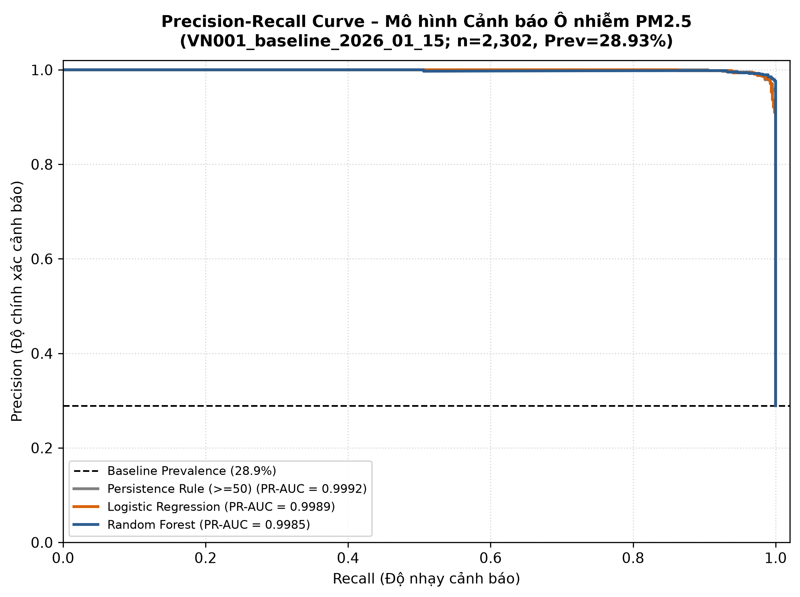
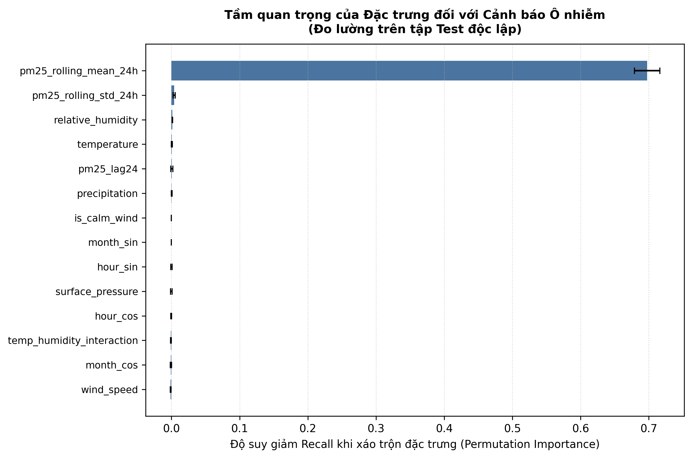
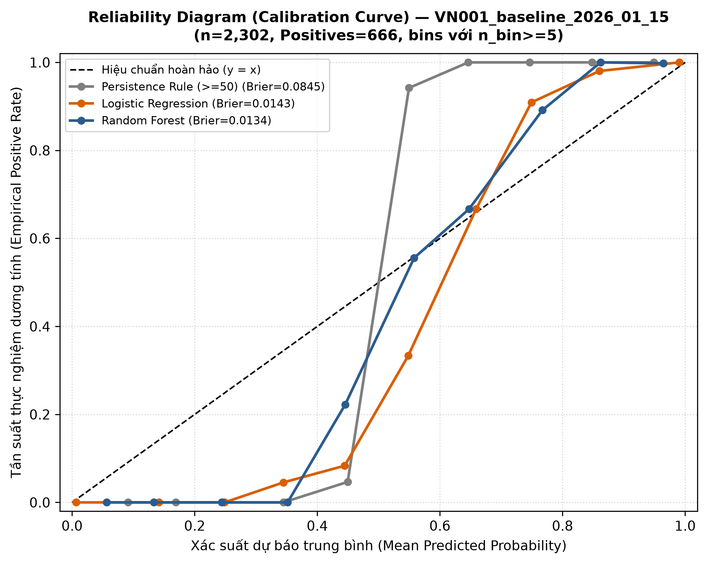
Chỉ mức 50 µg/m³ (trung bình trượt 24 giờ) tham chiếu QCVN 05:2023/BTNMT; các mức 40, 45, 55 µg/m³ là ngưỡng độ nhạy kỹ thuật (technical_sensitivity_threshold), không phải quy chuẩn pháp lý. Kiểm chứng SHA-256 trước/sau cho thấy artifact baseline bất biến (PASS).
Bảng 10. Độ nhạy ngưỡng cảnh báo – VN001 baseline (Logistic Regression, Test cố định 2.302 giờ) VN001 · 1.0.0-m2-baseline
| Ngưỡng (µg/m³) | Nhãn | Tỷ lệ dương Test | PR-AUC | Recall | Precision | F2 | FAR |
|---|---|---|---|---|---|---|---|
| 40 | độ nhạy kỹ thuật | 0,4557 | 0,9991 | 0,9971 | 0,9298 | 0,9829 | 0,063 |
| 45 | độ nhạy kỹ thuật | 0,3684 | 0,998 | 0,9894 | 0,9699 | 0,9854 | 0,0179 |
| 50 | QCVN 24 giờ | 0,2893 | 0,9989 | 0,9955 | 0,9418 | 0,9843 | 0,0251 |
| 55 | độ nhạy kỹ thuật | 0,2328 | 0,9981 | 1,0 | 0,7283 | 0,9306 | 0,1133 |
Bảng 11. Độ nhạy min_periods của cửa sổ trượt (ngưỡng 50 µg/m³) VN001 / VN003 · 1.0.0-m2-baseline / 2.0.0-issue44-extended
| Phạm vi | min_periods | Test hợp lệ | Tỷ lệ dương Test | PR-AUC | Recall |
|---|---|---|---|---|---|
| VN001 baseline | 12 / 18 / 24 | 3.236 / 3.016 / 2.302 | 0,2376 / 0,243 / 0,2893 | 0,9986 / 0,9988 / 0,9989 | 1,0 / 1,0 / 0,9955 |
| VN003 mở rộng 80/20 | 12 / 18 / 24 | 4.423 / 4.368 / 3.439 | 0,4956 / 0,4991 / 0,4981 | 0,9994 / 0,9994 / 0,9995 | 0,9977 (cả ba) |
| VN001 mở rộng 80/20 | 12 / 18 / 24 | 724 / 561 / 242 | 0,0276 / 0,0125 / 0,0 | 0,9433 / 0,8163 / UNESTIMABLE | 0,95 / 1,0 / UNESTIMABLE |
Với VN001 mở rộng, PR-AUC ở min_periods = 12/18 dựa trên rất ít ca dương (tỷ lệ dương 2,76% và 1,25%) nên chỉ mang tính tham khảo. Độ nhạy cửa sổ huấn luyện (50/75/100% đuôi Train) ở baseline cho PR-AUC 0,9948/0,9981/0,9989, nhưng hồi quy tuyến tính không lag không ổn định: Test R² là −0,6223, −1,8433, −1,954 tương ứng, hệ số wind_speed từ −11,8421 xuống −6,0673 – một cảnh báo về phụ thuộc cỡ mẫu và mùa. Nội suy phái sinh (chỉ trên Train; Test bất biến) thay đổi MAE Test không quá 0,018 ở VN001 và 0,0103 ở VN003, PR-AUC VN003 không đổi (0,9995).
Bảng 12. Đo đạc thực nghiệm tài nguyên trước/sau tối ưu (Pandas + Parquet) – không dùng Spark VN001 / VN001+VN003 · 1.0.0-m2-baseline / 2.0.0-issue44-extended
| Tập | Dung lượng đĩa | RAM | Đọc (median) | Workload phân tích |
|---|---|---|---|---|
| Baseline VN001 (9.044 × 18) | 1,8483 MB CSV → 0,2131 MB (−88,5%) | 1,6820 → 0,5263 MB (−68,71%) | 5,252 → 2,622 ms | 235,649 → 30,400 ms (7,75×) |
| Mở rộng (37.722 × 23) | 8,7952 MB CSV → 0,7103 MB (−91,9%) | 9,3147 → 2,7704 MB (−70,26%) | 28,419 → 7,532 ms | 971,582 → 66,694 ms (14,57×) |
Tổng dung lượng thực tế là 1,0453 MB Parquet (10,6435 MB CSV), thấp hơn ngưỡng khuyến nghị > 100 GB của Spark hơn bốn bậc độ lớn; Spark bị bác bỏ dựa trên số đo, tối ưu hóa gồm ép kiểu, nén cột Parquet và vector hóa. polars không được cài đặt nên ghi là chưa đo.
Kiểm toán bốn định kiến: (1) cảm biến – tương tác cờ độ ẩm cao với mùa và khác biệt hai trạm không chồng lấn; (2) không gian – chỉ hai điểm đo ở Hà Nội, không đại diện toàn đô thị; (3) sống sót/khuyết thiếu liên quan thời tiết – khuyết thiếu không MCAR (cụm tới 630 và 2.568 giờ); (4) NaN so với 0,0 – bảo toàn NaN, loại sentinel. Chi tiết trong tài liệu đánh giá định kiến và model card của dự án.
Bảng 13. Các kết quả âm tính được giữ lại VN001 / VN003 · 2.0.0-issue44-extended
| Hướng thử | Kết quả | Bằng chứng |
|---|---|---|
Nguồn mirror US Embassy (VN002) | NO-GO | reports/issue44_legacy_vs_extended_comparison.md |
| Biến giao thông theo giờ | NO-GO (không có chuỗi công khai theo giờ cho Hà Nội) | docs/issue44_checkpoint_status.md (CP4) |
| Nội suy khoảng trống ngắn | Bác bỏ làm giải pháp chính: nội suy tuyến tính dùng điểm đầu mút tương lai (t+1) nên rò rỉ; chỉ phục hồi 1,85% (VN003) – 9,55% (VN001) giờ thiếu; RMSE mùa đông lên tới 13,08 µg/m³ (VN003, L = 1 giờ) | reports/issue44_interpolation_evaluation.csv |
Khuyến nghị (bị chặn bởi bằng chứng): (i) giữ dữ liệu thiếu là NaN, không nội suy; (ii) báo cáo suy luận luôn kèm neff và phân biệt xác nhận/thăm dò; (iii) dùng mô hình phân loại chỉ như công cụ nowcast hồi cứu, và muốn triển khai cảnh báo thực cần nguồn khí tượng dự báo NWP với thời điểm phát hành hợp lệ cùng dữ liệu PM2,5 liên tục; (iv) không suy nguồn phát thải hay hành vi giao thông từ các hệ số hồi quy.
UNVERIFIED).VN001 mở rộng 80/20 không ước lượng được.Kết luận. Với cách xử lý phụ thuộc thời gian, trên baseline chỉ hai trong bốn kiểm định vượt Holm (so sánh với 50 và 25 µg/m³), kiểm định mùa là thăm dò, và kiểm định ngày làm việc/cuối tuần không đủ độ phân giải. Mô hình hồi quy chỉ có giá trị mô tả; mô hình cảnh báo hữu ích như nowcast hồi cứu nhưng hiệu năng suy giảm rõ khi h tăng (PR-AUC 0,9966 ở h = 1 xuống 0,7513 ở h = 24 trên baseline).
Tuyên bố sử dụng AI. Báo cáo được soạn bằng công cụ trợ lý AI trên cơ sở các tệp kết quả đã lưu; mọi số liệu được kiểm tra tự động với tệp nguồn và mọi quyết định thống kê do nhóm chịu trách nhiệm. Truy vết đầy đủ: docs/final_report_traceability.md.